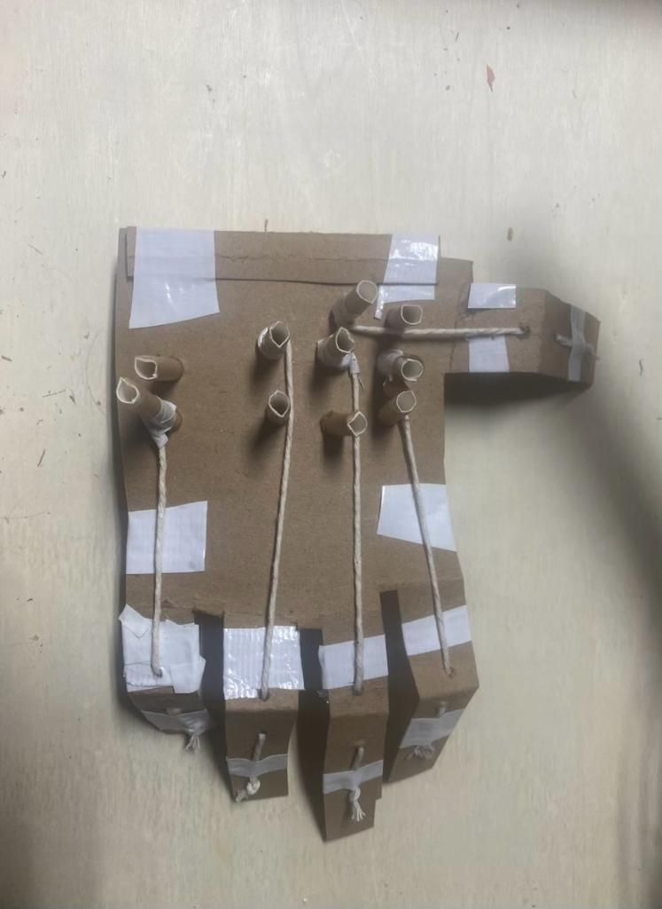
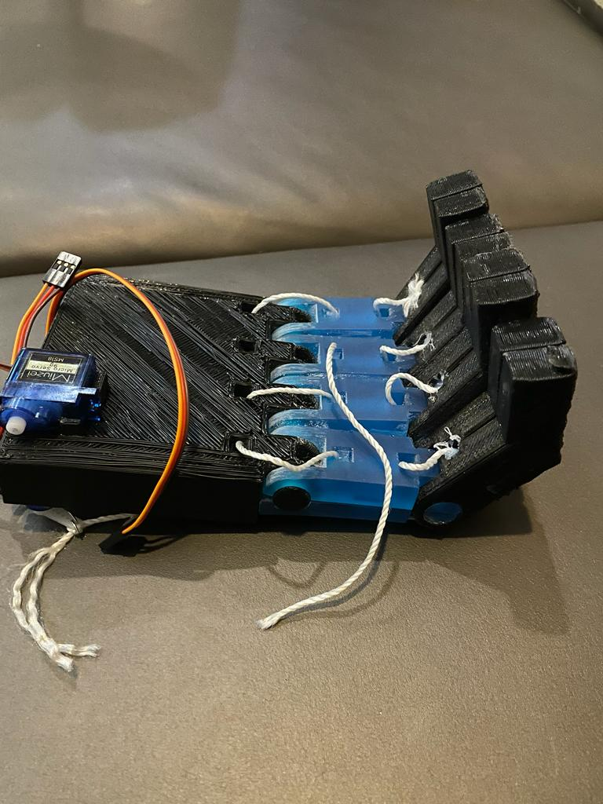

In a significant step forward in prosthetic technology, a team led by an ML Algorithm Specialist embarked on the Prosthetic Hand project, aiming to design and construct a functional prototype enhanced by machine learning. The project unfolded through several key stages:
The project began with the conceptualization of a prosthetic hand capable of basic movements, like grasping. Using servos, Arduinos, and resources from the Frith lab, the team built an initial cardboard model that simulated finger mechanics.
Machine learning algorithms were incorporated to analyze hand movement patterns. Sensor data from a glove was used to train a model to replicate natural hand motions, improving grasping capabilities.
The design transitioned into a CAD model using Solidworks, exploring various manufacturing methods—including CNC machining—to create realistic components.
3D printing and resin molding techniques were used to produce the palm and joint components, enhancing both the aesthetic and functional aspects.
In the final prototype, the Arduino was replaced with a DC power supply for improved control, and finger joints were directly attached to servos with regulation via potentiometers.
Integrating machine learning into the control system allowed the hand to adapt to different shapes and sizes, enhancing functionality through adaptive grasping techniques.
The Prosthetic Hand project bridged mechanical design and advanced technology, demonstrating the potential of AI-driven adaptive solutions in prosthetics.